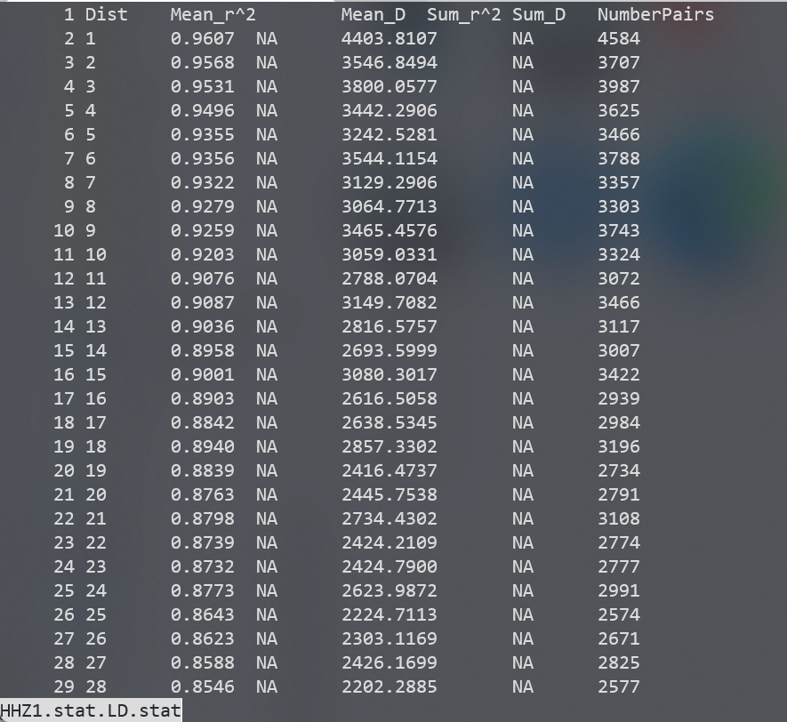
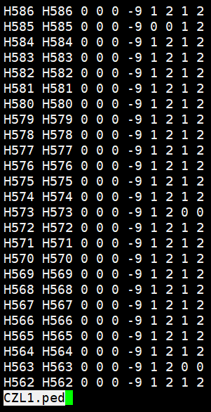
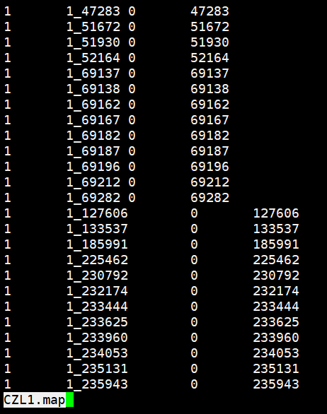
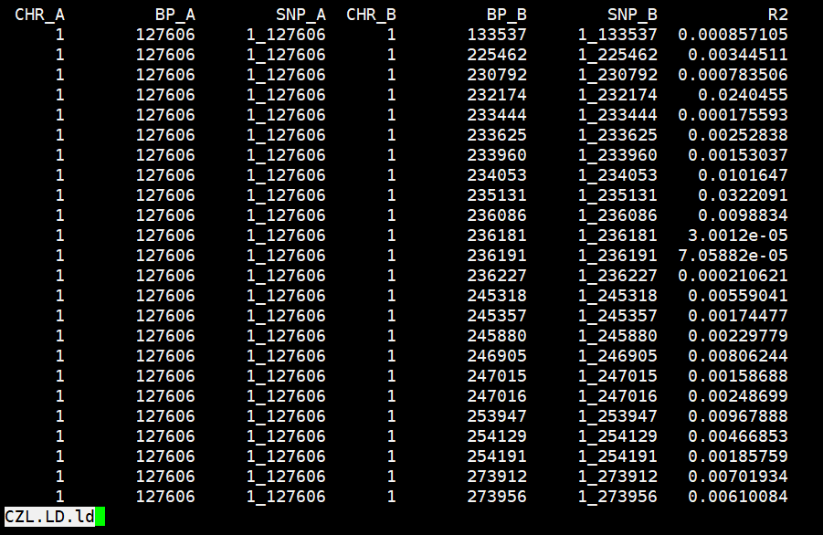
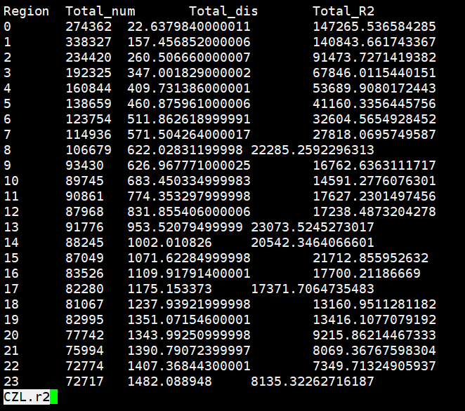
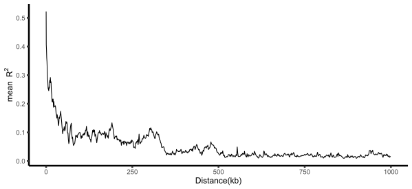

popLDdecay
连锁不平衡分析
当位于某一座位的特定等位基因与另一座位的某一等位基因同时出现的概率不等于群体中 因随机分布的两个等位基因同时出现的概率时，就称这两个座位处于连锁不平衡状态 （linkage disequilibrium）
- LD 的计算方法与度量：
设有两个位点 A、B，等位基因分别为 A、a 和 B、b，在群体中对应的频率分别为 f(A)、f(a) 和 f(B)、f(b)；两个位点共有 4 种单倍型 AB、Ab、aB 和 ab，对应的频率分别为 f(AB)、f(Ab)、 f(aB)和 f(ab)；
则有基本量：$D_{ab} = f(AB) - f(A)* f(B)$
从 0-1，度量值越高，LD 越高，一般情况下，如果两个位点连锁，连锁程度也越强。
特殊说明： $r^2$ 和 $|D’|$反映了 LD 的不同方面。$r^2$ 包括了重组和突变，而$|D’|$只包括重组史。$|D’|$能更准确地估测重组差异，但样本较小时，低频率等位基因组合可能无法观测到，导致 LD 强度被高 估，所以 $|D’|$不适合小样本群体研究。 当 $D_{ab} = 0$ 时，处于完全连锁平衡状态;
当 $D_{ab} ≠ 0$ 时，处于连锁不平衡状态;
当 $D_{ab} = 1$ 时，处于完全连锁不平衡状态;
当 $D_{ab} > 0$ 时，$|D’| = \frac{D_{ab}}{min(f(AB), f(ab))}$ ;
当 $D_{ab} < 0$ 时，$|D’| = \frac{D_{ab}}{min(f(Ab), f(aB))}$ ;
$r^2 = \frac{Dab}{f(A)*f(a)*f(B)*f(b)}$ ;
$|D’| = 0$, $r^2 = 0$ 时处于完全连锁平衡状态 ;
$|D’| = 1$, $r^2 = 1$ 时处于完全连锁不平衡状态
- LD 衰减影响因素
不同物种，LD 是不同基因座上等位基因非随机组合。但 LD 随世代的增加、重组次数的 增加而不断下降。所以，那些繁殖力强、时代间隔短的物种（例如，昆虫），其 LD 衰减的 速度是非常快的。
同一物种，不同群体类型，由于其遗传背景不同，LD 衰减速度也存在很大的差异。驯 化群体，群体遗传多样性下降，位点间的相关性（连锁程度）加强。所以，驯化程度越高，选择强度越大的群体，LD 衰减速越慢。同样，自然选择、遗传漂变导致的群体遗传多样性 下降，也会减慢 LD 衰减的速度。
在染色体的位置，染色体在不同位置的 LD 衰减距离是不同的。通常着丝粒区更难重组， 所以 LD 衰减更慢，而基因组上那些受选择的区域相比普通的区域，LD 衰减速度也是更慢 的。
- 应用：
- LD 衰减速度，对群体特性的评估，与群体类型的特性（自然群体还是驯化群体，选择 强度大小）是相关的。
- 全基因组关联分析所用标记量 =基因组大小/LD 衰减距离
- GWAS，功能 SNP 和 tag SNP，GWAS 检测到显著关联的区间后，则可以通过进一步绘 制局部的 LD 单体型块图，来进一步判断显著相关的 SNP 和目标基因间是否存在强 LD 关系。
- STRUCTURE 分析的时候理论上必须输入不相关的位点。那么，就可以通过预估 LD 衰 减到 0.1 的距离，来判断标记间的距离必须大于多少才能保证标记间不具相关性（LD<0.1）。
连锁不平衡分析-PopLDdecay
LD decay 在群体遗传研究中是最重要和常见的分析内容之一，是衡量 LD 水平的重要指标。 特别在自花授粉的作物中，LD 衰减不仅能够反映作物驯化和育种历史，还能显示基因流现 象、选择区域等。 传统 LD 处理软件 Haploview 可以用来计算 LD、单倍型等，但上百万 snp 标记的计算会消 耗大量资源，本地运行往往会由于运行内存不足而崩溃。PopLDdecay 是一种简单有效的 LD 衰减分析软件，可计算和绘图（不是特别理想），以压缩包形式输入输出内容，相比其他软 件，更适合大数据量的计算和分析
安装
1 | git clone https://github.com/BGI-shenzhen/PopLDdecay.git |
计算LD
1 | #2.1 For gatk VCF file deal, run PopLDdecay direct |
绘图
1 | #3.1 For one Population |
实例
1 | PopLDdecay -InVCF test.impute.vcf -OutStat test -MaxDist 1000 -MAF 0.05 -OutType 2 |

主要结果是 test.stat.gz
其中每一列的含义如下：
第一列：距离
第二列：$r^2$ 值
第三列：$|D’|$值
第四列：$r^2$ 值求和
第五列：$|D’|$值求和
第六列：SNP 对
LD 衰减图
1 | rm (list = ls() ) |
连锁不平衡分析-plink
plink 是进行连锁不平衡分析的主要工具，一般情况下需要两个基本的输入文件，后缀分别 为 ped 和 map。
格式转换
利用 plink 首先将 vcf 格式的文件转换为 ped 和 map 文件
1 | plink --vcf test.impute.vcf --recode ped --out test |
test.ped

前 6 列分别代表 Family ID、Individual ID、Paternal ID、Maternal ID、 Sex (1=male; 2=female; other=unknown)、Phenotype，后面的每一行，每两列代表一种基因型。
test.map

分别代表染色体，SNP，遗传距离，物理位置
LD 分析
1 | plink --map test.map --ped test.ped --noweb --allow-no-sex --allow-extra-chr --missing-genotype 0 --maf 0.05 --r2 --ld-window 999999 --ld-window-kb 1000 --ld-window-r2 0 --out test |
主要结果 test.ld

各列含义如下：
第一列代表第一个 SNP 所在染色体
第二列代表第一个 SNP 的物理位置
第三列代表第一个 SNP
第四列代表第二个 SNP 所在染色体
第五列代表第二个 SNP 的物理位置
第六列代表第二个 SNP
第七列代表 $r^2$ 值
结果整理
利用脚本 decay_chrom.pl 进行结果汇总，代码如下:
1 | perl decay_chrom.pl test.ld test.r2 1000 |

各列含义如下：
第一列代表区域
第二列代表区域内 SNP 数目
第三列代表区域内 SNP 之间的距离
第四列代表区域内 SNP 之间的 $r^2$ 值
LD 衰减图
1 | setwd("E:/BaiduNetdiskWorkspace/NGS/LD/") |
最终结果
最终结果如下：
